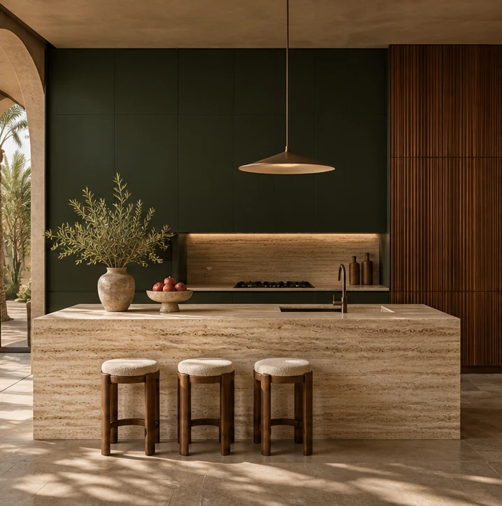
جزيرة من الترافرتين
ترافرتين فاتح مع واجهات خضراء وألواح من الجوز.
تصفّح التوزيعات والتشطيبات، وأضف النموذج الذي يناسبك إلى طلب عرض السعر.
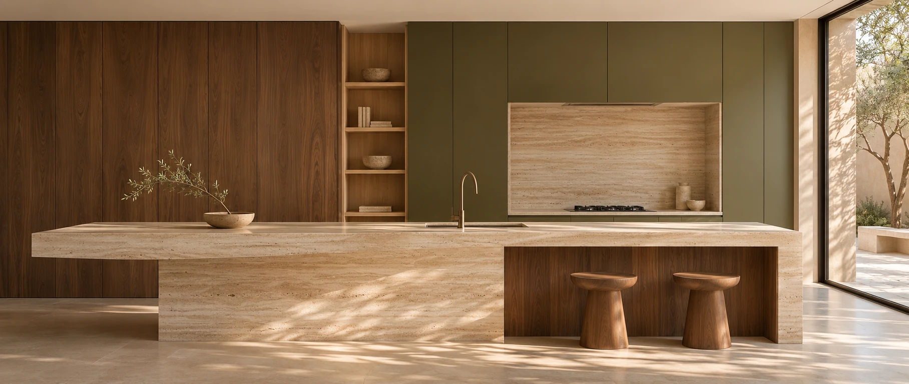
لا توجد تصاميم تجمع هذا التوزيع وهذه الدرجة اللونية.
تضيف الجزيرة مساحة للتحضير أو الجلوس، ويتحدد حجمها بعد مراجعة الممرات حولها.

ترافرتين فاتح مع واجهات خضراء وألواح من الجوز.
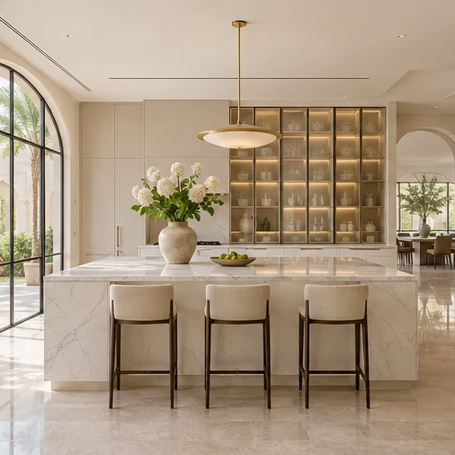
خزائن عاجية وجزيرة بيضاء بإضاءة طبيعية.

حجر فاتح يقابل جدار خزائن بلون الفحم وخشب داكن.
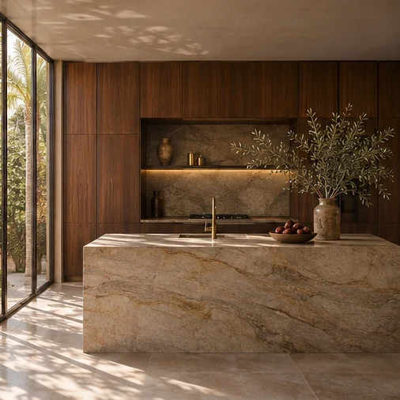
سطح فاتح بعروق واضحة مع خزائن خشبية طويلة.
خزائن على جدارين متجاورين تترك وسط المطبخ مفتوحًا.
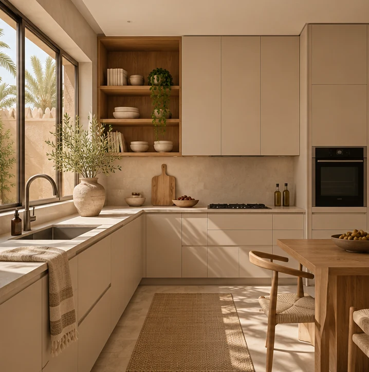
خزائن رملية مع تفاصيل خشبية عند زاوية المطبخ.
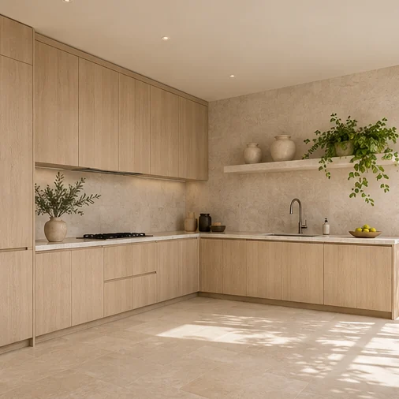
خشب فاتح وسطح حجري يكملان امتداد الخزائن.
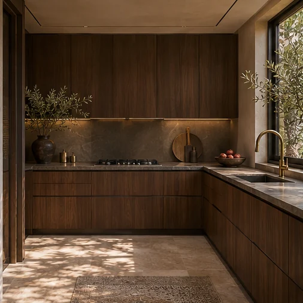
واجهات جوز داكنة وسطح بلون رمادي دافئ.
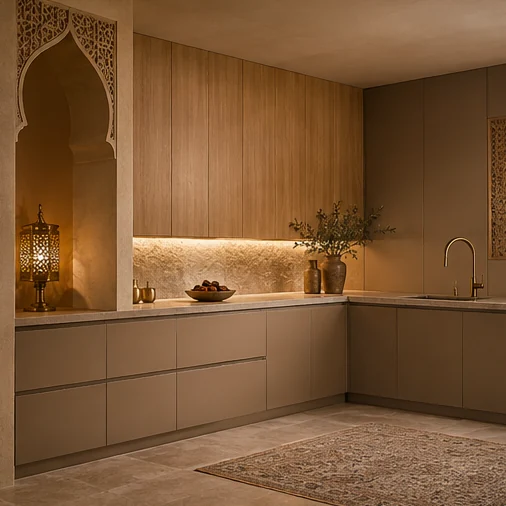
واجهات هادئة مع لمسات من الخشب عند الزاوية.
تجتمع الخزائن والأجهزة على جدار واحد، ويظل الجانب المقابل مفتوحًا.

سطح عمل طولي وخزائن مدمجة بواجهات خشبية فاتحة.
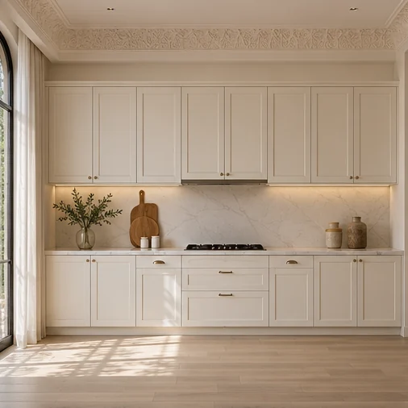
خزائن عاجية مؤطّرة مرتّبة على امتداد جدار واحد.
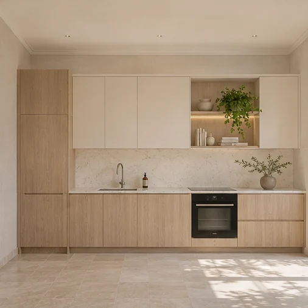
خزائن بلون خشبي دافئ تمتد على جدار واحد.
وحدات على جدارين متقابلين مع ممر عمل في الوسط.

وحدات متقابلة مع أسطح فاتحة وممر يطل على نافذة.
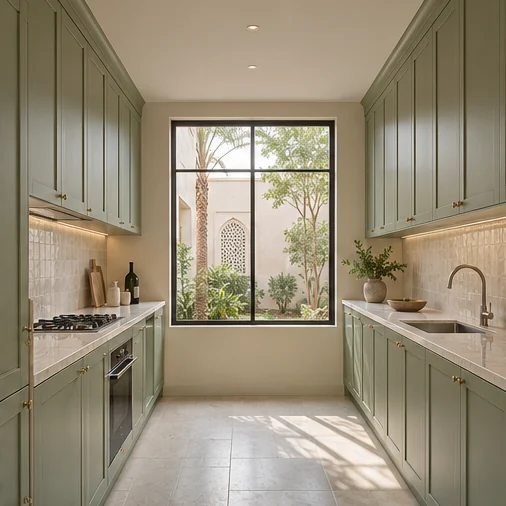
أخضر مريمي مقابل سطح فاتح على امتداد الممر.
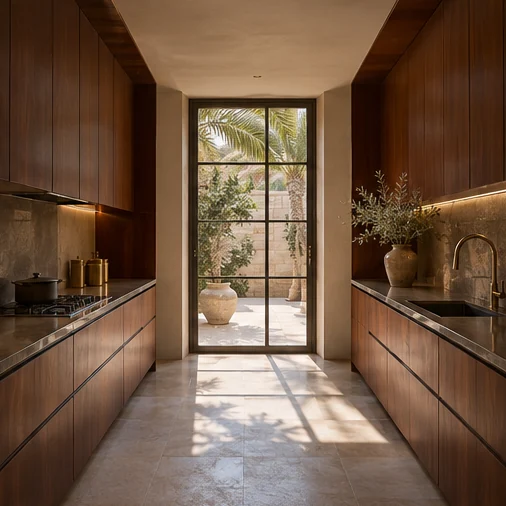
وحدات خشبية على جانبي الممر، مع إضاءة عند نهايته.
ثلاثة أضلاع توزّع العمل والتخزين حول مساحة مركزية.
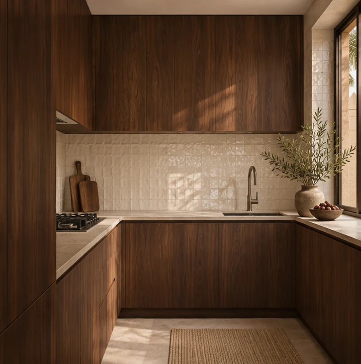
خزائن من ثلاث جهات، مع سطح فاتح وبلاط خلفي هادئ.
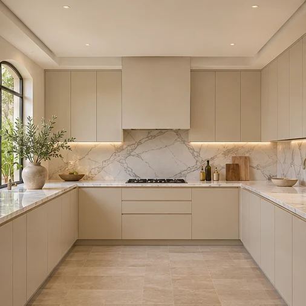
واجهات رملية وسطح فاتح يمتد حول منطقة العمل.
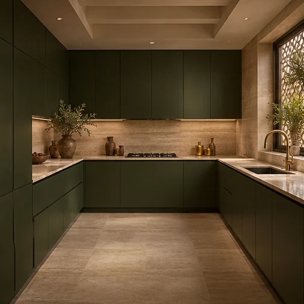
واجهات خضراء داكنة يوازنها حجر فاتح على ثلاثة جوانب.
اختر شكل المساحة وما تحتاجه من تحضير وتخزين أو جلوس.